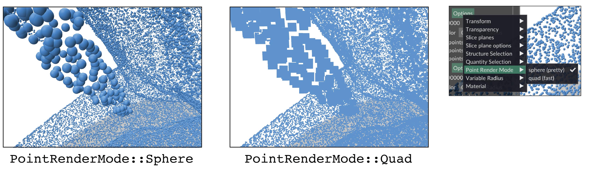

Point Clouds¶
Point clouds are one of the core structures in Polyscope. In addition to simply displaying the points, Polyscope can show any number of scalar, vector, or color quantities associated with the points.
As always, try clicking on a point to see the data associated with that point.

Registering a point cloud¶
Example: a point cloud of random points
import numpy as np
import polyscope as ps
ps.init()
# generate some points
points = np.random.rand(100, 3)
# visualize!
ps_cloud = ps.register_point_cloud("my points", points)
ps.show()
# with some options
ps_cloud_opt = ps.register_point_cloud("my points", points,
radius=0.02, point_render_mode='quad')
ps.show()
register_point_cloud(name, points, enabled=None, radius=None, point_render_mode=None, color=None, material=None)
Add a new point cloud structure to Polyscope.
nameis the name for the structure, as a stringpointsis anN x 3numpy array of point locations
Additional optional keyword arguments:
enabledboolean, is the structure enabled initiallyradiusfloat, a size for the points relative to the scene length scale (useset_radius(val, relative=False)for absolute units)colorfloat 3-tuple, default color values for the points as rgb in [0,1]materialstring, name of material to use for cloud
if not specified, these optional parameters will assume a reasonable default value, or a persistent value if previously set.
2D point clouds are also supported, see 2D data.
As with all structures, there is also get_point_cloud("name"), has_point_cloud("name"), and remove_point_cloud("name").
Updating a point cloud¶
The locations of the points in a point cloud can be updated with the member function update_point_positions(newPositions). All quantities will be preserved. Changing the number of points in the cloud is not supported, you will need to register a new cloud (perhaps with the same name to overwrite this one).
Example: update positions (continued from above)
new_pos = np.random.rand(100, 3)
ps_cloud.update_point_positions(new_pos)
ps.show()
PointCloud.update_point_positions(newPos)
Update the point positions in a point cloud structure. newPos must be valid input as to initially construct a point cloud, with the same number of points.
Adjusting the point radius¶
Set the radius of the points with PointCloud.set_radius(newRad), or in the constructor. By default, the radius is a relative value which gets scaled by the content in the scene, so for example a default of 0.02 will always be a reasonable size no matter what the scale of the content in your scene is. Or, set relative=False to set an absolute radius in world units.
PointCloud.set_radius(newVal, relative=True)
Update the radius for points in the point cloud.
By default the radius is interpreted as a relative value, setting relative=False will treat is as an absolute length in world units.
To set a variable radius which is different for each point in the point cloud, see the variable radius page.
Point render mode¶
By default, Polyscope renders point clouds with a sphere for each point. However, for large point clouds (for instance, > 500,000 points, or on low-end hardware), this sphere rendering may become prohibitively expensive and lead to a laggy interface. As an alternative, points can be rendered as a small quad per-point, which is more efficient (for instance, it renders in real-time with 20,000,000+ points on my mid-range GPU).

The point render mode setting specifies which style is used:
spherea small sphere is drawn for each point (default)quada small quad is drawn for each point
PointCloud.set_point_render_mode(newVal)
Set the the rendering method used to draw each point. Pass the string name of the style to use. One of 'sphere' (default) or 'quad'.
As usual, this can also be set as a keyword argument when the point cloud is registered, like register_point_cloud('my points', data, point_render_mode='quad').
There is also a corresponding get_point_render_mode().
Options¶
Options control the appearance of the cloud. These options can also be passed as keyword arguments to the initial register_point_cloud(), as noted above. See structure management for options common to all structures such as enabling/disabling, transforms, and transparency.
| Parameter | Meaning | Getter | Setter | Persistent? |
|---|---|---|---|---|
| point radius | size of rendered points | get_radius() |
set_radius(newVal, relative=True) |
yes |
| point color | default color for points | get_color() |
set_color(newVal) |
yes |
| point render mode | how to draw points | get_point_render_mode() |
set_point_render_mode(newVal) |
yes |
| material | material for point | get_material() |
set_material(newVal) |
yes |
Example: set options which affect the appearance of the point cloud
cloud = polyscope.register_point_cloud("my points", points)
cloud.set_enabled(False) # disable
cloud.set_enabled() # default is true
cloud.set_radius(0.02) # radius is relative to a scene length scale by default
cloud.set_radius(1.7, relative=False) # radius in absolute world units
cloud.set_color((0.3, 0.6, 0.8)) # rgb triple on [0,1]
cloud.set_material("candy")
cloud.set_transparency(0.5)
# alternately:
ps.register_point_cloud("my points 2", points, enabled=False, material='candy',
radius=0.02, color=(1., 0., 0.)
transparency=0.5)